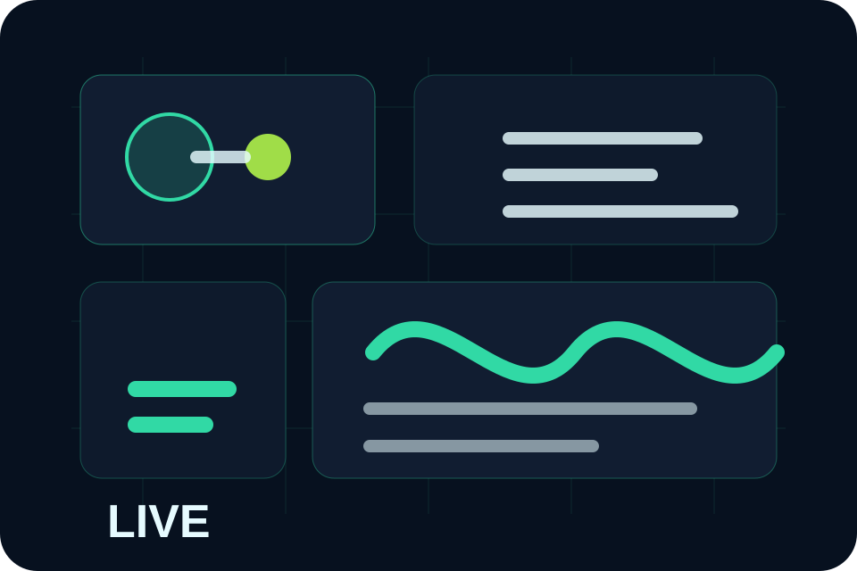

Scope with evidence
We inspect current work before proposing automation.
About Us
AstraGrid blends engineering discipline with a practical understanding of service, ecommerce, logistics, and founder-led teams.
We started AstraGrid for teams that had outgrown disconnected forms, spreadsheets, CRM workarounds, and brittle dashboards but did not need a giant enterprise implementation.
Clear scope, measurable impact, accessible interfaces, secure defaults, and supportable systems guide every build.

We inspect current work before proposing automation.
Every system has named maintainers, docs, and review cadence.
We define escalation, QA checks, and improvement cycles from the start.